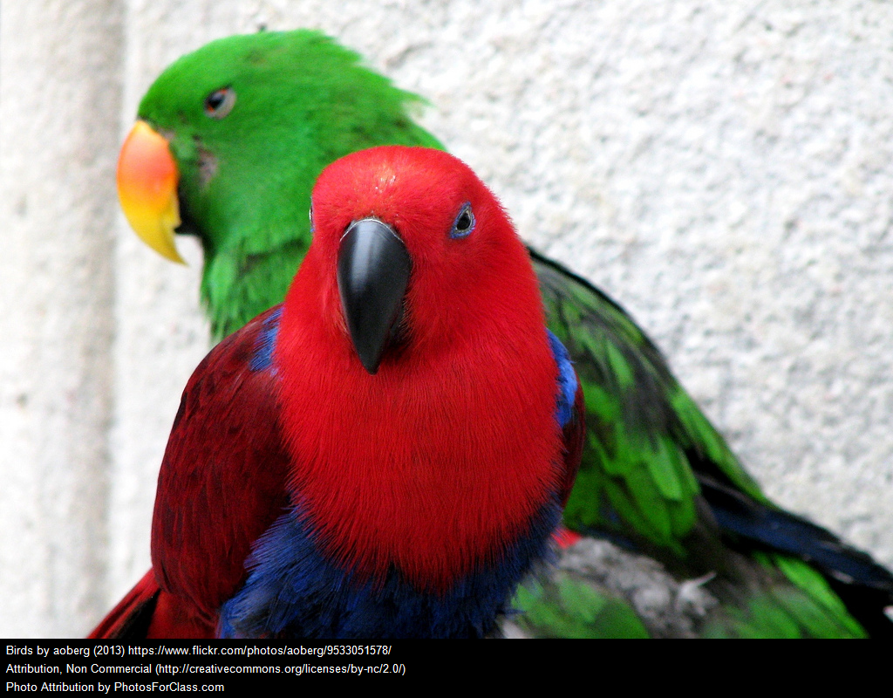

Here is a paragraph containing some inline elements—an image and a span. It is here to test a DMI GUI that can handle both block elements and inline elements. (Inline-element handling is not added yet.)This is a span.
(Here is another paragraph.) Another GUI feature of this web page is that the previous paragraph can be dragged after this paragraph. Please try it. (You will see that when you click on the first paragraph and drag the mouse, you are not getting any feedback to indicate that you are dragging the first paragraph; however, the mouse position is being tracked and upon the release of the mouse button, the first paragraph will is moved after the second paragraph. The paragraph is moved by changing its position value but rather by removing and re-appending it from its parent element.)
TODO: It is easy for a user to miss the fact that the <hr> element above can be selected by the mouse because it does not have much height. Any element with a small computed value for its height will present the same difficulty. It might be a good idea to set a minimum height of about 5 or 10 pixels to every element.